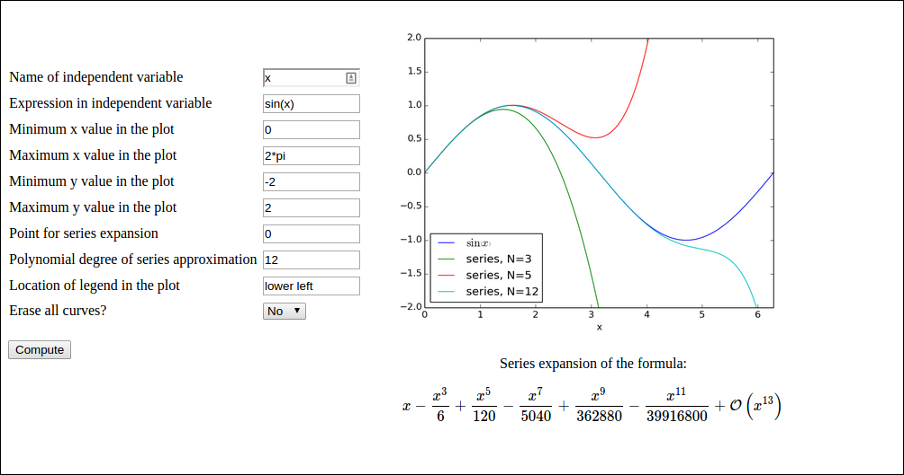

Exercises
Exercise 1: Add two numbers
Make a web application that reads two numbers from a web page,
adds the numbers, and prints the sum in a new web page.
Package the necessary files that constitute the application
in a tar file.
Filename: add2.tar.gz.
Exercise 2: Upload data file and visualize curves
Suppose you have tabular data in a file:
# t y error
0.0000 1.2345 1.4E-4
1.0000 0.9871 -4.9E-3
1.2300 0.5545 8.2E-3
That is, there is a comment line with headings for the various
columns, and then floating-point values are listed with an
arbitrary number of columns and rows. You want to upload such
a data file to a web application and have the each column, from
the second one, plotted against the the values in the first column.
In the particular example, y and error should be plotted against
t, yielding two curves.
The web application may have one field: the name of the file to upload.
Search for constructions on how to upload a files and write this
application. Generate a suitable data file for testing purposes.
Filename: upload.tar.gz.
Exercise 3: Plot a user-specified formula
The purpose of this exercise is to write a web application that can visualize any user-given formula. For example, in the interface below,

the user has
- specified a curve \( \sin (x) \) (
sin(x)) to be plotted - specified the \( x \) interval to be \( [0,2\pi] \) (
[0, 2*pi]) - clicked Compute to get a blue line with the sine curve
- specified a new formula \( \sin(x)e^{-x} \) (
sin(x)*exp(-x)) - chosen No as the answer to Erase all curves?
- clicked Compute to have the \( \sin(x)e^{-x} \) drawn with green line without erasing the previous curve
Performing eval on the user's input requires that names like
sin, exp, and pi are defined. The simplest approach is to
do a
from numpy import *
in the top of the file containing the compute function. All the names
from numpy are then available as global variables and one can simply
do domain = eval(domain) to turn the string domain coming from
the Domain text field into a Python list with two elements.
A better approach is not to rely on global variables, but run eval
in the numpy namespace:
import numpy
domain = eval(domain, numpy.__dict__)
The evaluation of the formula is slightly more complicated if eval
is to be run with the numpy namespace. One first needs
to create \( x \) coordinates:
x = numpy.linspace(domain[0], domain[1], 10001)
Now, eval(formula, numpy.__dict__) will not work because a formula
like sin(x) needs both sin and x in the namespace. The latter
is not in the namespace and must be explicitly included. A new namespace
can be made:
namespace = numpy.__dict__.copy()
namespace.update({'x': x})
formula = eval(formula, namespace)
You should add tests when evaluating and using the strings from input as these may have wrong syntax.
Filename: plot_formula.tar.gz.
Exercise 4: Visualize Taylor polynomial approximations
This exercise develops a web application that can plot Taylor polynomial approximations of any degree to any user-given formula. You should do Exercise 3: Plot a user-specified formula first as many of the techniques there must be used and even further developed in the present exercise.
The figure below shows an example of what one can do in the web app:

Here, the user has
- filled in the formula \( \sin(x) \) (
sin(x)) - specified N to be 3
- clicked Compute to get the formula \( \sin(x) \) plotted together with the Taylor polynomial approximation of degree 3, expanded around \( x=0 \)
- changed N to 5
- chosen No for the question Erase all curves?
- clicked Compute to have the series expansion of degree 5 plotted in the same plot
- changed N to 10
- clicked Compute to have the series expansion of degree 10 plotted in the same plot
sympy to produce Taylor polynomial expansions of arbitrary
expressions. Here is a session demonstrating how to obtain the
series expansion of \( e^{-x}\sin (\pi x) \) to 2nd degree.
>>> import sympy as sp
>>> x = sp.symbols('x')
>>> f = sp.exp(-x)*sp.sin(sp.pi*x)
>>> f.series(x, 0, 3)
pi*x - pi*x**2 + O(x**3)
>>> sp.latex(f.series(x, 0, 3))
'\\pi x - \\pi x^{2} + \\mathcal{O}\\left(x^{3}\\right)'
>>> fs = f.series(x, 0, 3).removeO() # get rid of O() term
>>> fs
-pi*x**2 + pi*x
>>> f_func = sp.lambdify([x], fs) # make Python function
>>> f_func(1)
0.0
>>> f_func(2)
-6.283185307179586
Basically, the steps above must be carried out to create a Python
function for the series expansion such that it can be plotted.
A similar sp.lambdify call on the original formula is also necessary
to plot that one.
However, the challenge is that the formula is
available only as a string, and it may contain an independent variable
whose name is also only available through a string from the web interface.
That is, we may give formulas like exp(-t) if t is chosen as
independent variable.
Also, the expression does not contain function names prefixed with sympy or
sp, just plain names like sin, cos, exp, etc.
An example on formula is cos(pi*x) + log(x).
a) Write a function
def formula2series2pyfunc(formula, N, x, x0=0):
that takes a sympy formula, and integer N, a sympy symbol x
and another sympy symbol x0 and returns
1) a Python function for formula, 2) a Python function for the
series expansion of degree N of the formula around x0, and
3) a LaTeX string containing the formula for the series expansion.
Put the function in a file compute.py. You should thereafter be able to run
the following session:
>>> import compute
>>> import sympy as sp
>>> from sympy import *
>>> t = symbols('t')
>>> formula = exp(-2*t)
>>> f, s, latex = compute.formula2series2pyfunc(formula, 3, t)
>>> latex
'- \\frac{4 t^{3}}{3} + 2 t^{2} - 2 t + 1'
>>> import matplotlib.pyplot as plt
>>> import numpy as np
>>> t = np.linspace(0, 2)
>>> plt.plot(t, f(t), t, s(t))
[<matplotlib.lines.Line2D at 0x7fc6c020f350>,
<matplotlib.lines.Line2D at 0x7fc6c020f5d0>]
>>> plt.show()
The resulting plot is displayed below.

The series expansion is obtained by formula.series(x, x0, N),
but the output contains an O() term which makes it impossible to
convert the expression to a Python function via sympy.lambify.
Use
series = formula.series(x, x0, N+1).removeO()
to get an expression that can be used as argument to sympy.lambdify.
We use N+1 since N in the series function refers to the degree
of the O() term, which is now removed.
For the LaTeX expression it is natural to have the O() term:
latex = sympy.latex(formula.series(x, x0, N+1))
because then the terms start with the lowest order (and not the highest
order as is the case when removeO() is used).
b) Write the compute function:
def visualize_series(
formula, # string: formula
independent_variable, # string: name of independent var.
N, # int: degree of polynomial approx.
xmin, xmax, ymin, ymax, # strings: extent of axes
legend_loc, # string: upper left, etc.
x0='0', # string: point of expansion
erase='yes', # string: 'yes' or 'no'
):
Converting the string formula to a valid sympy expression is
challenging. First, create a local variable for a sympy symbol
with the content of
independent_variable as name, since such a variable is needed
with performing eval on formula. Also introduce a variable x
to point to the same sympy symbol. Relevant code is
# Turn independent variable into sympy symbol, stored in x
import sympy as sp
exec('x = %s = sp.symbols("%s")' %
(independent_variable, independent_variable))
Evaluating formula in the namespace of sympy (so that all the sin,
exp, pi, and similar symbols are defined properly as sympy
objects) needs a merge of the sympy namespace and the variable for
the sympy symbol representing the independent variable:
namespace = sp.__dict__.copy()
local = {}
local[independent_variable] = x
namespace.update(local)
formula = eval(formula, namespace)
Turning x0 into a valid sympy expression is easier: x0 = eval(x0, sp.__dict__).
Note that in the web interface, the minimum and maximum values on the axis
can be mathematical expressions such as 2*pi. This means that these
quantities must be strings that are evaluated in the numpy namespace, e.g.,
import numpy as np
xmin = eval(xmin, np.__dict__)
Getting the legends right when plotting multiple curves in the same
plot is a bit tricky. One solution is to have a global variable legends
that is initialized to [] and do the following inside the compute function:
import matplotlib.pyplot as plt
global legends
if erase == 'yes': # Start new figure?
plt.figure()
legends = []
if not legends:
# We come here every time the figure is empty so
# we need to draw the formula
legends.append('$%s$' % sp.latex(formula))
plt.plot(x, f(x))
Here, f is the Python function for computing the numpy variant
of the expression in formula.
Use the test block in the file to call the compute function several
times with different values of the erase parameter to test that
the erase functionality is correct.
c) Write the remaining files. These have straightforward content if Exercise 3: Plot a user-specified formula is done and understood.
Filename: Taylor_approx.tar.gz.
Django resources
- Django webpage
- List of Web tutorials
- YouTube videos
- Effective Django Tutorial
- Django by Example (blog, questionnaire, etc.)
- Django for Scientific Applications
- A Tutorial for Deploying a Django Application that Uses Numpy and Scipy to Google Compute Engine Using Apache2 and modwsgi